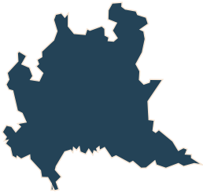
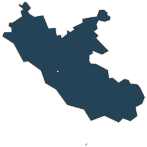

Dati in tempo reale| ore 14:00
Fonte dati: Istituto Piepoli & Noto per RaiELEZIONI REGIONALI 2018
-

Vai al dettaglio
LOMBARDIA
Affluenza85,19% Enti pervenuti61446 su 61446 -

Attilio fontana
Forza Italia, Lega, Fratelli d’Italia e altri
16,6% -

Giorgio gori
Forza Italia, Lega, Fratelli d’Italia e altri
16,6% -

Dario violi
Movimento 5 Stelle
16,6% -

onorio rosati
Liberi e Uguali
16,6% -

Giulio Arringhini
Grande Nord
16,6% -

massimo gatti
Sinistra per la Lombardia
16,6%
-

Vai al dettaglio
LAZIO
Affluenza85,19% Enti pervenuti61446 su 61446 -
Nicola zingaretti
Partito Democratico, Liberi e Uguali, Zingaretti Presidente
16,6% -
Stefano parisi
Forza Italia, Fratelli d'Italia, Lega, Energie per l'Europa
16,6% -
Roberta Lombardi
Movimento 5 Stelle
16,6% -
Sergio Pirozzi
Pirozzi Presidente, Movimento Nazionale per la Sovranità
16,6% -
Mauro Antonini
CasaPound
16,6% -
Jean Leonard Touadi
Alternativa Popolare, Italia dei Valori, Centristi per l'Europa
16,6%